Scans, são projetos que visam traduzir raw´s de mangás(material original), HQ´s, webtoons e disponibilizarem para o público de maneira gratuita através dos seus respectivos sites. As Scans possuem seus próprios componentes para que seu trabalho funcione de maneira apropriada. Dentre estes componentes os principais estão:
Há milhares Scans de mangás, tanto nacionais quanto internacionais, e irei mostrar quatro Scans nacionais como, pois desde o seu modo de organização de equipe, design de seus sites e logos diferem muito de uma para a outra:
|  |